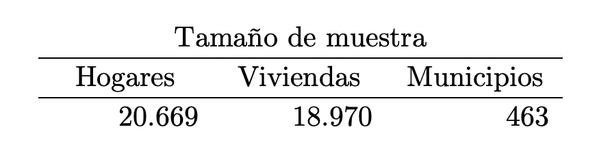
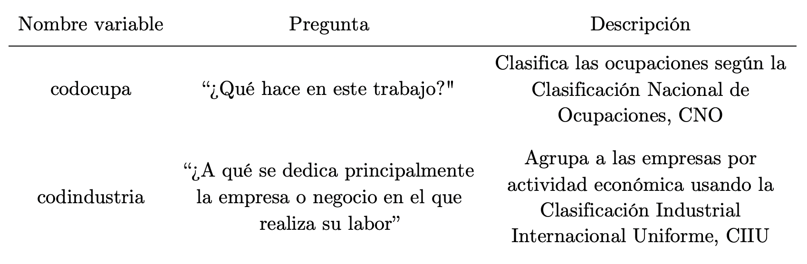
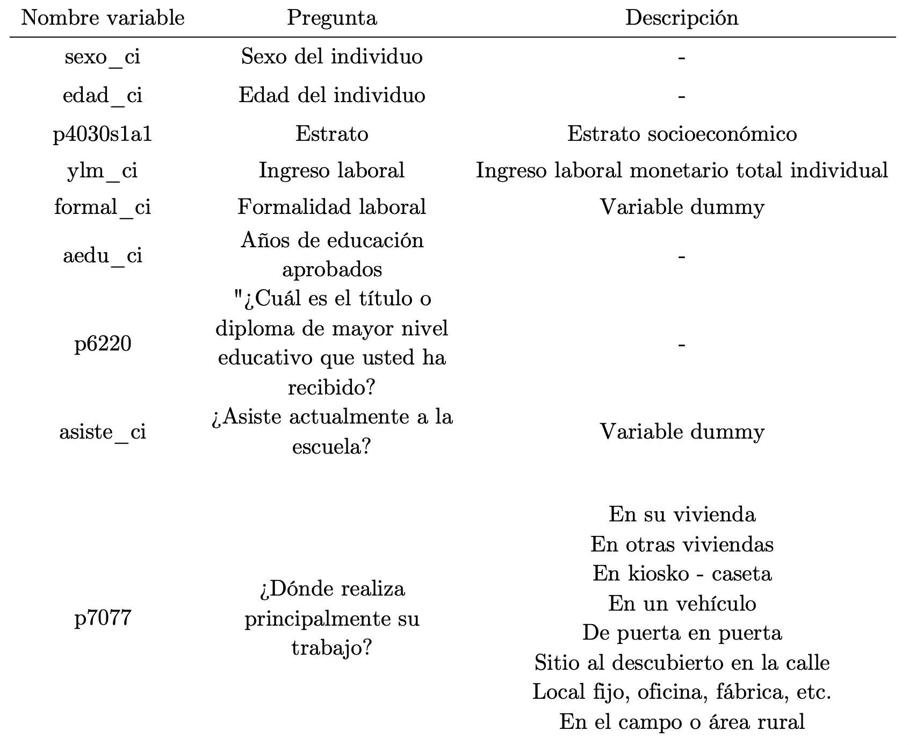
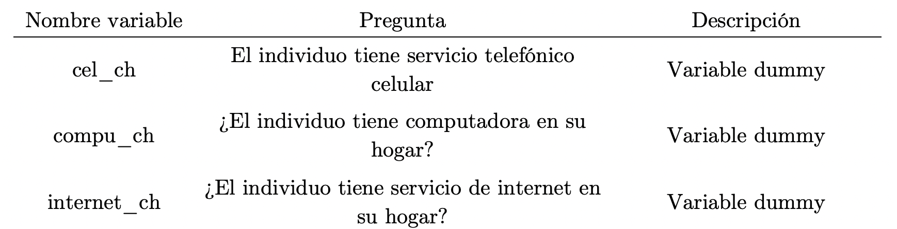

Análisis del efecto económico y laboral del distanciamiento social en Colombia
Javier Javier Daza Olivella
M.Sc.(s). Ingeniería Industrial
Universidad Industrial de Santander
javierjdaza@gmail.com
Martha Liliana Torres Barreto
PhD. Estrategia y Marketing
13 Julio, 2020
Soy Javier Javier Daza, Ingeniero Industrial.
Actualmente curso una Maestría en Ingeniería Industrial en la Universidad Industrial de Santander (UIS).
Tengo un especial interes en los factores relacionados con la pobreza, desigualdad y productividad. Soy apasionado por el
diseño, la tecnología y la programación.
Introducción
Desde diciembre de 2019, en la ciudad de Wuhan (China) se da inicio del brote de COVID-19 (acrónimo de coronavirus disease 2019). COVID-19 es una enfermedad infecciosa causada por el virus SARS-CoV-2,
pese a su baja mortalidad, su fácil
transmisión y contagio ha provocado que se mantengan medidas extremas de protección, aislamiento y desinfección. En ausencia de una vacuna, la política clave implementada durante la pandemia ha sido el “distanciamiento social”. La aplicación de
esta estrategia garantiza la disminución de contagios, retrasa el pico de infección y evita colapsos en los sistemas de salud locales. Sin embargo, la reducción del impacto al sistema de salud del país trae consigo un impacto económico y
laboral inexorable, las personas no podrán ir a sus oficinas y lugares de trabajo, lo que se traduce en un decrecimiento económico sustancial en el país.
Según cifras del DANE (2016a), para febrero del 2020 la tasa de desempleo alcanzó el 13%, en abril ascendió a 19,8%, lo que significó un aumento de 6,8 puntos en tan solo 2 meses. Lo que muestran los
guarismos es una clara disminución de la
fuerza laboral en el país. Dada la naturaleza y rapidez de esta pandemia las medidas de los gobiernos han sido aceleradas y orientadas a garantizar la salud de los habitantes, por encima de la estabilización de las economías.
De esta manera, sumando a la preocupación mundial por los efectos que está generando la pandemia en las economías del mundo, esta investigación tiene como objetivo fundamental realizar un análisis de
los efectos económicos y laborales del
distanciamiento social en el país, los ejes fundamentales del estudio son encontrar los sectores económicos y ocupaciones mas vulnerables, conocer las características de aquellos que pueden trabajar de forma remota, validar si los mismos tienen
las condiciones para realizar su trabajo de forma sobresaliente desde su casa y medir los efectos que tiene para el país la migración hacia el teletrabajo. Para ello se plantea un análisis tomando ventaja de la Gran Encuesta Integrada de
Hogares del año 2019 y el primer trimestre del 2020. Con lo anterior se propone un modelo probabilístico probit para estimar la viabilidad de los individuos para hacer trabajo remoto y el impacto de esta variable en la desigualdad salarial en
el escenario de distanciamiento social. Dado que las pandemias son eventos que muy rara vez se toman a toda la población mundial, el escenario actual que vive el país es totalmente nuevo y poco estudiado, lo que representa un desafío y a la vez
una oportunidad para contribuir a la
literatura.
El aporte fundamental de la presente investigación, mas allá de un análisis descriptivo, es la de brindar - haciendo uso de datos actualizados - una base teórica y matemática en donde se analicen los
efectos de la pandemia en el país a nivel
regional y contribuya al replanteamiento de la dinámica laboral de teletrabajo, que antes era impensable y que hoy se ha convertido en algo común. Cada región del país tendrá diferentes grados de vulnerabilidad dada su estructura económica,
grado de informalidad y promedio de ocupaciones de los mismos, por lo que centrar el análisis por región, contribuirá a la elaboración de futuras políticas públicas con énfasis en esas áreas débiles de cada departamento.
El presente documento está dividido de la siguiente forma; en la sección 1 se presenta una revisión de literatura sobre el tema de investigación y todos los conceptos implicados, la sección 2 la integra la justificación y planteamiento del
problema, los objetivos e hipótesis forman parte de las secciones 3 y 4, en ese orden. La sección 5 está enfocada en mostrar la metodología usada para dar solución a los objetivos descritos en la sección anterior, la sección 6 y 7 se dedican a
mostrar los resultados esperados y al impacto que tendrá la investigación, y el documento cierra con la sección 8 y 9 donde se detalla el cronograma de actividades y el presupuesto necesario para llevar a cabo la investigación con éxito.
1. Revisión de literatura
A lo largo de esta sección se detallarán todos los conceptos asociados al distanciamiento social, se da un respaldo teórico a las medidas de contención que se han aplicado en escenarios pandémicos del
pasado. Se pretende, además, mostrar la
importancia de estas medidas y como su implementación, reduce drásticamente el impacto económico, social y de salud pública en el mundo.
1.1. Distanciamiento social
El distanciamiento social es un conjunto de intervenciones o medidas no farmacéuticas destinadas a prevenir la propagación de una enfermedad contagiosa manteniendo una distancia física entre las
personas y reduciendo el número de veces que las
personas entran en contacto estrecho con otras.
El Centro para el Control yla Prevención de Enfermedades (CDC) ha descrito el distanciamiento social como un conjunto de métodos para reducir la frecuencia y la cercanía del contacto entre las personas
con el fin de disminuir el riesgo de
transmisión de la enfermedad (Gerberding et al., 2007). Durante la pandemia de gripe de 2009, la OMS describió el distanciamiento social como mantener al menos una distancia de un brazo de los demás, y minimizar las reuniones (WHO, 2008).
El distanciamiento social, a través de la historia, ha sido ampliamente usado en pasados escenarios pandémicos. En 1916, nueva york enfrentaba la epidemia de polio, en todo el territorio nortea
americano ya había 27.000 casos y solo en la
ciudad de New York habían por lo menos 6000 muertes, por lo que el gobierno opta por el distanciamiento social obligatorio, cerrando así teatros y prohibiendo las reuniones, la asistencia a parques, piscinas, playas entre otros reduciendo así
el ratio de contagio y el número de muertes asociadas a la epidemia (Battin et al., 2009). Durante la pandemia de la gripe española, en 1918, la ciudad de Philadelphia reportó el primer caso de gripe española el 17 de septiembre de ese mismo
año, sin embargo, la ciudad continuó con sus eventos tradicionales y reuniones de mucha concentración social. Para el 16 de octubre 4500 personas habrían muerto a causa de la enfermedad (Davis, 2018). Sin embargo, no ocurrió lo mismo para la
ciudad de St Louis, cuyo primer registro de un caso confirmado se dio el 5 de octubre, dos días después la ciudad decreta medidas severas de distanciamiento social, prohibiendo la asistencia a escuelas, eventos sociales y cualquier reunión que
incluyera aglomeración de personas, dicha medida redujo la mortalidad entre 10% – 20% frente a otras ciudades como Philadelphia (Smith, 2007).
Entre 1957 y 1958, se inicia la pandemia de la influenza asiática – en ingles Asian flu -, según el estudio de Chin (1960) el cierre de colegios y la implementación de medidas severas de distanciamiento
social redujeron la morbilidad al 90% y
esa misma medida ayudó al control de la influenza en Estados Unidos en los años 2004 – 2008 (Wheeler et al., 2010). Para el caso del brote de SARS de 2003 las medidas de distanciamiento social como la prohibición de grandes reuniones, el cierre
de escuelas, teatros y otros lugares públicos, y las medidas de salud pública como la trazabilidad de personas infectadas, su posterior aislamiento y la cuarentena de todas las personas que tuvieron cercanía con los mismos permitió que el virus
tuviese una propagación mas lenta, menos letal y garantizó que los afectados tuviesen acceso a los centros de salud en los principales países afectados (Bell et al., 2004).
Figura 1. Impacto previsto de las medidas de distanciamiento social para una pandemia de virus
*Elaboración del autor adaptado de diagramas similares del Informe Técnico del Centro Europeo para la Prevención y control de enfermedades (Bell et al., 2004)
Como se detalla en la ilustración 1, el distanciamiento social disminuye la velocidad de propagación haciendo que las capacidades de los sistemas de salud no entren en colapso, garantizando que la
población enferma acceda a servicios médicos
para tratar la enfermedad.
Medidas de distanciamiento social
Para Maharaj & Kleczkowski (2012) si se quiere que las medidas de distanciamiento social sean efectivas, estas deberán aplicarse de forma rigurosa e inmediatas. Las siguientes son las estrategias mas
efectivas y usadas alrededor del mundo,
todas tienen como objetivo principal reducir al mínimo el contacto entre seres humanos.
Evitar contacto físico
Según el departamento de Seguridad y salud en el Trabajo de los Estados Unidos OSHA (2020) se debe mantener por lo menos 2 metros de distancia entre personas, evitar los abrazos y todo gesto que
involucre contacto físico.
Cerrar las escuelas
Como se describió antes, a pesar del gran impacto social que genera cerrar los colegios, los modelos matemáticos propuestos por Hui (2010) y Hui (2010) demuestran que el brote puede retrasarse con el
cierre de los entornos educativos.
Cerrar sitios de trabajo
Dejando a un lado el impacto económico y con la intención de garantizar la salud de las personas la migración al tele trabajo es pieza clave para un escenario correcto de distanciamiento social, la
evidencia de los estudios de Kumar (2012)
sugieren que si el 33% de los sitios de trabajo son cerrados, la tasa de contagio se reduce en 4,9% y el pico de contagio se retrasa, en por lo menos 1 semana.
Cancelar reuniones masivas
Los estudios de Inglesby (2006) revelan que las reuniones masivas (eventos deportivos, conciertos musicales, cine, entre otros) aumentan el potencial de transmisión de infección. Durante la pandemia de
1918, el desfile militar de Philadelphia
puede haber sido responsable de la propagación de la enfermedad al mezclar marineros infectados con multitudes de civiles (Davis, 2018).
Viajes restringidos
Para Ferguson (2006) la restricción de viajes nacionales e internacionales pueden retrasar el pico de infección en por lo menos 3 semanas. Se descubrió que las pruebas de detección que se realizaban en
los aeropuertos, durante el brote del SARS
en 2003 en Canadá (Bell et al., 2004) y Estados Unidos (Cetron et al., 2004) no fueron eficaces ni confiables.
Cuarentena
Desde la antigüedad se han tomado ampliamente las medidas de cuarentena y aislamiento con el objetivo de frenar la propagación de enfermedades altamente infecciosas, sobretodo en la etapa inicial del
brote, este último caracterizado por la
ausencia de vacunas, tratamientos o cualquier medida médica que ataque de raíz la causa de la enfermedad, la práctica se remonta a mediados del siglo XIV cuando los funcionarios de Venecia, Italia, obligaron a los barcos a anclar durante 40
días para evitar la plaga(Arthur, 2006).
En 1377, en la colonia veneciana de Ragusa, el gobierno decidió usar una estrategia para frenar el rápido contagio de la temida peste negra, por lo tanto, se impuso un periodo de aislamiento para todos
los viajeros y tripulaciones que allí
desembarcaran durante un periodo de 30 días. Ragusa, es el primer caso históricamente documentado de una ciudad declarada en aislamiento social. En décadas posteriores en ciudades como Venecia, Marsella, Pisa y Génova se emitieron leyes
similares y ampliaron de 30 a 40 días, del trentino se pasó al quarantino, término derivado del vocablo “quaranta”, que significa “cuarenta” (Torres, 2020).
Históricamente la cuarentena, como estrategia de contención, se ha aplicado en pandemias como la peste negra – también llamada peste bubónica – cuyo saldo en víctimas según estimaciones del siglo XXI
fue de 25 millones de personas – solo en
Europa -, casi un tercio de la población (Benedictow, 2016). O el brote de gripe española del año 1918 que en tan solo 1 año cobró la vida entre 20 y 40 millones de personas, y por la cual que es considerada la pandemia mas letal de la historia
(Kalnins, 2006). También el caso mas reciente, previo al COVID-19, el Síndrome Respiratorio Agudo Severo (SARS) a finales del 2002.
El diccionario de Cambridge define cuarentena como:
“El período de tiempo durante el cual un animal o una persona que pueda tener una enfermedad se mantiene alejado de otras personas o animales para que la enfermedad no se pueda propagar y se caracteriza por la detención y segregación de
sujetos
sospechosos de padecer una enfermedad contagiosa”
Cetron & Landwirth (2005) definen la cuarentena como la restricción de las personas que se presume que han estado expuestas a una enfermedad contagiosa pero que no están enfermas. Puede aplicarse a
nivel individual, de grupo o comunitario y
suele implicar la restricción al hogar o al centro designado, por otra parte Mitka (2003) la define como la separación y/o restricción del movimiento de personas que no están enfermas pero que se cree que han estado expuestas a la infección
para prevenir la transmisión de enfermedades.
Coronavirus (COVID-19)
El 31 de diciembre de 2019 llega por primera vez a la oficina de la Organización Mundial de la Salud OMS en china la información de los casos de neumonía con etiología desconocida, detectada en la
ciudad de Wuhan, provincia de Hubei. 44
pacientes fueron reportados entre el 31 de diciembre de 2019 y el 3 de enero de 2020, todos bajo los mismos síntomas, neumonía sin identificación del agente causal.
La comisión de salud en China asocia el virus con la exposición de un marisco en el mercado de animales de la ciudad de Wuhan, caracterizado por condiciones bajas de salubridad y de higiene.
El 7 de enero de 2020 las autoridades chinas identifican una nueva variante del coronavirus, que se denominó “coronavirus del síndrome respiratorio agudo severo 2 (SARS-CoV-2)” (World Health
Organization, 2008), días siguientes de su
identificación logran aislarlo para posteriormente, el 12 de enero, compartir la secuencia genética para el libre uso de los países del mundo.
El 13 de enero de 2020, se confirma el primer caso de COVID-19 por fuera del territorio chino, razón por la cual el 22 de enero de 2020 el director general de la Organización Mundial de la Salud - Tedros Adhanom Ghebreyesus - convoca un Comité
de emergencias según lo previsto en el Reglamento Sanitario Internacional (RSI 2005) para evaluar si el brote constituye una emergencia de salud pública de importancia internacional (WHO, 2020b).
Para el 12 de febrero de 2020 La OMS convoca un foro de investigación e innovación sobre el COVID-19, al que asisten más de 400 expertos y entidades de financiación de todo el mundo. En el foro
intervienen George Gao, Director General del
Centro de Control de Enfermedades de China, y Zunyou Wu, Epidemiólogo Jefe de dicho organismo. Profundamente preocupados por los alarmantes niveles de propagación de la enfermedad, por su gravedad, y por los niveles alarmantes de inacción, la
Organización Mundial de la Salud, bajo el anuncio de su director Tedros Ghebrevesus el 12 de marzo de 2020 señaló:
“[…] Desde la OMS hemos llevado a cabo una evaluación permanente de este brote y estamos profundamente preocupados tanto por los alarmantes niveles de propagación y gravedad, como por los alarmantes niveles de inacción. Por estas
razones,
hemos
llegado a la conclusión de que la COVID-19 puede considerarse una pandemia”(WHO, 2020a)
Con el comunicado emitido por la OMS, países de todo el mundo tomaron la decisión de entrar en estado de emergencia, regulando la salida de las personas de las casas, aumentando los métodos de
prevención, desinfección e higiene y decretando el
distanciamiento social como medida obligatoria con el fin de mitigar la creciente expansión del virus y el posible colapso de los sistemas de salud.
Con dichas medidas, y siguiendo los parámetros de la Organización Mundial de la Salud, la estrategia adoptada para mitigar el impacto negativo sobre la economía local ha sido el teletrabajo. Nunca en la
historia de Colombia se había podido
estudiar el teletrabajo bajo los mismos parámetros como se puede hacer hoy producto de la pandemia, a continuación, se presenta una aproximación del teletrabajo desde la literatura.
1.2. Teletrabajo
De las características mas importantes – y con mayor impacto en la economía de un país - para el éxito de las medidas de distanciamiento social, como se detalló antes, es el cierre de todos los lugares
de trabajo cuya actividad principal no
está
relacionada con la solución de necesidades básicas de la población. El banco mundial es su reporte menciona Banco Mundial (2020):
[…] la actividad económica se ve interrumpida no solo por los acontecimientos en el extranjero, sino también porque la gente deja de trabajar y comerciar para reducir el riesgo de contagio. Esta combinación de un shock de demanda, un shock
financiero y un shock de oferta no tiene precedentes, y hace que sea muy difícil pronosticar la magnitud exacta de la recesión que se avecina.
En los Estados Unidos, el autor Kahn (2020) encontró que los puestos de trabajo se derrumbaron en la segunda mitad de marzo y ahora están un 30% por debajo de su nivel de principios de año, lo que
denota una gran caída en la fuerza laboral
producto del distanciamiento social, provocado por la pandemia COVID-19. Con el distanciamiento social obligatorio en marcha, la alternativa mas eficiente para la economía es que los trabajadores que pueden teletrabajo: lo hagan. Para los
autores
Dingel & Neiman (2020) el 37% de los trabajos en los Estados Unidos pueden hacerse de forma sobresaliente desde casa y que los mismos representan el 46% de los salarios, por lo que es correcto concluir que aquellas personas que pueden trabajar
de
forma remota tienen en promedio mejor salario.
Saltiel (2020) examina la viabilidad de trabajar desde casa en países en desarrollo. Saltiel encontró que solo en promedio el 13% de los países de muestra de la encuesta Habilidades para la empleabilidad y la productividad STEP (por sus siglas
en
ingles) puede trabajar de forma remota, desde 5,5% a 23% para Ghana y Yunnan (China) respectivamente. Los autores previamente mencionados hicieron análisis a partir de las ocupaciones y oficios que los empleados realizan en sus trabajos, sin
embargo, mas allá del análisis relacionado con el trabajo, esta investigación tiene por objeto caracterizar a las personas que pueden hacer teletrabajo de forma sobresaliente en Colombia.
En Estados Unidos Mongey & Weinberg (2020) hacen una aproximación a las características asociadas a aquellos que pueden realizar labores desde casa. Los autores sugieren que los empleados que pueden
hacer teletrabajo tienen menos probabilidades
de tener un título universitario, de tener un empleo formal y la mayoría pertenece a los quintiles socioeconómicos mas altos. Para el mismo país, Drucker & Khattak (2000) analizaron los niveles de propensión de los trabajadores para ejecutar
sus
labores desde casa, los autores encontraron que el nivel de educación, la presencia de niños pequeños en el hogar y variables asociadas a la distancia del sitio de trabajo fomentan el trabajo frecuente desde el hogar.
Uno de los desafíos de la presente investigación es la cuantificación de la proximidad social en el trabajo, sin embargo, dadas las condiciones del trabajo se puede elaborar una clasificación de acuerdo
a las actividades llevadas a cabo en la
labor y hasta en el propio objeto de la misma, siguiendo a Fernando Leibovici, Ana Maria Santacreu (2020) y usando para ello la base de datos O*NET elaboraron un indicador llamado “indicador de intensidad de contacto”, el cual tenia un rango de
0
a 100, donde 0 correspondía a oficios que no requieren personas cercanas hasta 100, que incluía aquellos que implicaba contacto directo con personas. Obtuvieron una aproximación por estado, de aquellos empleos y sectores mas vulnerables,
recurso
importante para la elaboración de políticas públicas que pueden beneficiar a esos empleados.
Para el caso colombiano las investigadoras Eslava & Isaacs (2020) basadas en las medidas de contención del gobierno elaboraron un procesamiento de datos y categorizaron aquellos sectores económicos y ocupaciones mas vulnerables al panorama de
distanciamiento social.
A continuación, se realiza una aproximación a los efectos económicos provocados por el distanciamiento social derivado de la pandemia COVID-19 en el sector educativo, y 2 sistemas de producción del sector primario, la agricultura y manufactura.
1.3. Efectos económicos del brote (COVID-19)
A la fecha de este documento la pandemia COVID-19 ha dado lugar a más de 4,3 millones de casos confirmados y más de 290.000 muertes en todo el mundo. Ha despertado el temor de una inminente crisis
económica y recesión. El distanciamiento
social, el autoaislamiento y las restricciones para viajar – mencionadas anteriormente - han llevado a una reducción de la fuerza laboral en todos los sectores económicos y han provocado la pérdida de muchos puestos de trabajo. Las escuelas han
cerrado y la necesidad de productos básicos y manufacturados ha disminuido.
Por el contrario, la necesidad de suministros médicos ha aumentado considerablemente. El sector alimentario también se enfrenta a un aumento de la demanda debido al pánico en la compra y el almacenamiento de productos alimenticios (Nicola et
al., 2020).
Para Fernandes (2020) se ha subestimado los efectos económicos del brote, debido a la excesiva dependencia de las comparaciones históricas con el SARS, o la crisis financiera de 2008.Según el autor en
un escenario leve, el crecimiento del PIB
se vería afectado entre un 3 y 6% dependiendo el país. Como resultado, mostró que, entre los 30 países cubiertos, habrá una disminución media del PIB en 2020 de -2,8%.
Las economías orientadas a los servicios se verán particularmente afectadas negativamente, y tendrán más empleos en riesgo. Los países como Grecia, Portugal y España, que dependen más del turismo (más del 15% del PIB), se verán más afectados
por la crisis. Por lo tanto, los países que dependen en gran medida del comercio exterior se ven más afectados. Finalmente, el autor concluye que, en promedio, cada mes adicional de crisis cuesta entre el 2,5 y el 3% del PIB mundial.
1.3.1. Agricultura y manufactura
El desplome de la demanda de hoteles y restaurantes en todo el mundo ha hecho que los precios de los productos básicos agrícolas disminuyan en un 20% (Bhosale, 2020). Además, los mercados han dado un
paso más al cerrar el comercio de piso, lo
que ha afectado la capacidad de intercambio de productos.
Una encuesta realizada por la Federación Británica del Plástico (BPF) exploró cómo el distanciamiento social, derivado del COVID-19 está impactando en las empresas manufactureras del Reino Unido. Más
del 80% de los encuestados anticiparon una
disminución del volumen de negocios en los próximos 2 trimestres, y el 98% admitió su preocupación por el impacto negativo de la pandemia en las operaciones comerciales (BPF, 2020). Los problemas de importación y las deficiencias de personal se
destacaron como las principales preocupaciones de las empresas debido a la interrupción de las cadenas de suministro y las políticas de autoaislamiento.
1.3.2. Educación
La pandemia ha afectado a todos los niveles del sistema educativo, desde el preescolar hasta la educación terciaria. Diferentes países han introducido diversas políticas, que van desde el cierre
completo en Alemania e Italia hasta el cierre
selectivo en el Reino Unido para todos. Más de 100 países han impuesto el cierre de instalaciones educativas en todo el país. La UNESCO estima que cerca de 900 millones de alumnos se han visto afectados por el cierre de instituciones educativas
Figura 2. Impacto global de COVID-19 en el cierre de escuelas.

Fuente: (UNESCO, 2020)
Para muchos, las medidas de distanciamiento social son exageradas, incluso inútiles, sin embargo, como lo respalda la evidencia teórica y empírica, priorizar la economía antes que la salud acarrearía
consecuencias nefastas. Adicionalmente,
aPara
muchos, las medidas de distanciamiento social son exageradas, incluso inútiles, sin embargo, como lo respalda la evidencia teórica y empírica, priorizar la economía antes que la salud acarrearía consecuencias nefastas. Adicionalmente, a pesar
de
que existen aproximaciones previas, representa un gran desafío elaborar un análisis económico bajo las condiciones actuales, en plena revolución tecnológica y de la llamada “era digital”. Las condiciones actuales no son comparables a los
escenarios de distanciamiento social del pasado, eso genera una gran diferencia, no solo para el análisis de los efectos que ha tenido el distanciamiento social en el país, sino también, al gran cambio en la dinámica laboral que puede despertar
esta situación alrededor de todo el mundo. Dada la naturaleza del estudio y la actualidad de la problemática a la fecha de redacción de esta propuesta, es de suma importancia la actualización de la revisión de literatura periódicamente y así
garantizar la actualidad de la información y las cifras aquí presentadas.
pesar de que existen aproximaciones previas, representa un gran desafío elaborar un análisis económico bajo las condiciones actuales, en plena revolución tecnológica y de la llamada “era digital”.
Las condiciones actuales no son comparables a
los
escenarios de distanciamiento social del pasado, eso genera una gran diferencia, no solo para el análisis de los efectos que ha tenido el distanciamiento social en el país, sino también, al gran cambio en la dinámica laboral que puede despertar
esta situación alrededor de todo el mundo. Dada la naturaleza del estudio y la actualidad de la problemática a la fecha de redacción de esta propuesta, es de suma importancia la actualización de la revisión de literatura periódicamente y así
garantizar la actualidad de la información y las cifras aquí presentadas.
2. Justificación y planteamiento del problema
En la historia de la humanidad se tiene registro de numerosas pandemias que han puesto a la humanidad en peligro de extinción, todas ellas las caracteriza el rápido contagio, las altas tasas de
mortalidad y por supuesto, su gran impacto en la economía mundial. En un mundo fuertemente conectado e integrado, los impactos de la enfermedad más allá de mortalidad (los que mueren) y morbilidad (los que no pueden trabajar durante un período
de tiempo) han salido a la luz desde el brote. A raíz de la ralentización y quiebre de la economía China, el funcionamiento de las cadenas de suministro ha sido detenida. Las empresas de todo el mundo, independientemente de su tamaño, que
dependen altamente de los insumos que produce china han experimentado problemas en su producción (Bonet-Morón et al., 2020). Además de los problemas asociados a la producción está también el pánico entre los consumidores y las empresas, por lo
que los patrones de consumo habitual se han distorsionado, teniendo todo un fuerte impacto en la economía mundial(Baldwin & Mauro, 2020).
Para el cierre del 2019, Colombia presentaba una tasa de crecimiento de la economía del 3,3%, se esperaba que para el 2020 Colombia reflejara un crecimiento cercano al 3,5% (CEPAL, 2020) no obstante,
según nuevos cálculos del Banco
Interamericano de Desarrollo (BID) la tasa de crecimiento para América Latina y el Caribe se situará en un rango entre el –1,8% y el –5,5% en los próximos tres años, donde Colombia, como exportador de petróleo, resultará afectado por su
importante atracción de inversión extranjera para financiar su déficit en cuenta corriente (Nuguer & Powell, 2020). Al igual que el resto del mundo, la economía colombiana enfrenta una de las crisis mas fuertes en su historia como consecuencia
de la pandemia causada por el COVID-19.
Según Yang (2020) si todos los parámetros se siguen y no hay retrasos – es decir; en un escenario perfecto – la vacuna estaría disponible para su distribución para el segundo trimestre del 2021. Por lo
tanto, mas allá del análisis de los
impactos asociados al escenario de distanciamiento social, es objeto de estudio el teletrabajo, no solo como alternativa en tiempos de aislamiento social, sino como estrategia para la reestructuración laboral de las empresas locales y el
aumento de la productividad.
Finalmente, es fundamental para el crecimiento económico el estudio de los fenómenos que alteran los comportamientos de consumo, del mercado laboral y de los factores asociados a las crisis, sin
importar cuales hayan sido las posibles causas.
La historia a demostrado que sucesos que generan distorsión en la economía mundial correctamente estudiados pueden reducir la vulnerabilidad y ayudar a ejercer herramientas de control para prevenir, proteger y fortalecer esas áreas afectadas
con la ayuda de políticas públicas correctas. Por lo tanto, con la presente investigación se plantea un análisis económico y laboral de las medidas aplicadas durante la pandemia, se toma ventaja de la actualidad de los datos y del panorama
incierto que se enfrenta el mundo ante un panorama que se sabe su inicio, pero no su fin, dado que no se tiene tratamiento efectivo ni vacuna aprobada.
3. Objetivos
3.1 Objetivo general
Analizar el efecto económico y laboral causado por el distanciamiento social en Colombia.
3.2 Objetivo específico
-
Analizar la vulnerabilidad de los sectores económicos en Colombia ante el escenario de distanciamiento social
-
Caracterizar las ocupaciones laborales en Colombia en materia de sensibilidad frente a la coyuntura de distanciamiento social.
-
Determinar perfiles de trabajadores en Colombia, en función de los oficios que pueden ejecutar de forma remota
-
Calcular la relación entre el teletrabajo y la desigualdad salarial regional
4. Hipótesis
4.1. Hipótesis 1
-
En el escenario de distanciamiento social, la capacidad de realizar teletrabajo está determinado principalmente por el nivel económico y el nivel educativo.
4.2. Hipótesis 2
-
Existe una correlación entre la probabilidad de realizar teletrabajo y la desigualdad salarial regional
5. Metodología
El DANE ha desarrollado encuestas de hogares desde finales de la década del 60. Actualmente la Gran Encuesta Integrada de Hogares se ha especializado en la medición de la estructura del mercado laboral
y
los ingresos de los hogares. Tiene
cobertura nacional que permite obtener resultados por zona urbana y rural. Incluye 23 departamentos, 13 ciudades principales (con sus áreas metropolitanas) y 11 ciudades intermedias. El universo para la Gran Encuesta Integrada de Hogares está
conformado por la población civil no institucional, residente en todo el territorio nacional (DANE, 2016b).
Esta tiene una muestra total anual de 240.000 hogares aproximadamente, lo que hace que sea la de mayor cobertura a nivel nacional.
Tabla 1. Descripción muestra Gran Encuesta Integrada de Hogares

Fuente: (DANE, 2016b)
La metodología que conducirá la presente investigación consta de 4 fases, en la primera fase se definirán los criterios para clasificación de ocupaciones, en la fase dos se elaborará una caracterización
de variables asociadas al trabajador y
ocupaciones, la fase tres la comprende el análisis de condiciones para realizar teletrabajo de los trabajadores y finalmente, la fase cuatro, que será un análisis econométrico del teletrabajo y su correlación con la desigualdad salarial.
Figura 2. Diagrama de Venn de las fases para solución de investigación.

FASE 1: Definición de criterios para clasificación de ocupaciones y sectores económicos
FASE 2: Caracterización de variables asociadas al trabajador y ocupaciones
FASE 3: Análisis de condiciones para realizar teletrabajo de los trabajadores
FASE 4: Análisis econométrico del teletrabajo y su impacto en la desigualdad salarial.
A continuación, se describen cada una de las fases de investigación con sus respectivas actividades:
5.1. Fase 1: Definición de criterios para clasificación de ocupaciones y sectores económicos
Esta fase tiene como objetivo principal la definición de criterios para clasificar aquellos trabajos que pueden hacerse bajo las funciones que los trabajadores desempeñan en sus puestos de trabajos
tradicionales, se usará la clasificación de
vulnerabilidad, elaborada por Eslava & Isaacs (2020) las cuales tienen en cuenta los parámetros definidos por el gobierno Colombiano.
Tabla 2. Variables a usar Fase 1

Para el cumplimiento de esta fase se llevan a cabo las siguientes actividades:
Actividad 1: Realizar una revisión de literatura relacionada con aquellas ocupaciones que pueden hacer labores de forma remota en las diferentes etapas del distanciamiento social definidos por el
gobierno colombiano.
Actividad 2: Clasificar las ocupaciones según los parámetros encontrados en la literatura que pueden hacerse desde casa.
Actividad 3: Agrupar y analizar, bajo las ocupaciones previamente identificadas, cuales sectores de la economía colombiana son mas vulnerables.
Actividad 4: Hacer análisis descriptivo de los resultados.
Actividad 5: Realizar una agrupación regional de lo obtenido.
5.2. Fase 2: Caracterización de variables asociadas al trabajador y ocupaciones
En esta fase el propósito es realizar un análisis de las características asociadas a los trabajadores que pueden hacer teletrabajo. Esta etapa contribuirá directamente a la etapa final, pues las
variables identificadas en esta fase serán las
variables independientes para el modelo probabilístico de la fase final.
A continuación, se relacionan las variables a usar:
Tabla 3. Variables a usar Fase 2

Las actividades que conforman esta fase serán las siguientes:
Actividad 1: Examinar todas las variables que describen a aquellos que pueden realizar teletrabajo.
Actividad 2: Elaborar un perfil del trabajador bajo las características previamente identificadas
5.3. Fase 3: Análisis de condiciones para realizar teletrabajo de los trabajadores
Una vez culminadas las fases 1 y 2, se procederá con la Fase 3, dedicada a la identificación de ocupados con potencial para trabajar desde casa, por tanto, se identifican variables asociadas a las
condiciones de los trabajadores en sus hogares.
Esta etapa es fundamental pues segmenta aun mas la población, ya que de esto depende radicalmente la viabilidad de los trabajadores de efectuar de forma sobresaliente su labor desde casa.
En esta etapa culmina la identificación de las variables dependientes e independientes que se usarán en el modelo probabilístico probit.
Tabla 4. Variables a usar Fase 3

Las actividades que conforman esta fase serán las siguientes:
Actividad 1: Analizar la población objetivo, aquellos que pueden realizar teletrabajo y que tienen las condiciones en sus hogares para realizarlo.
Actividad 2: Elaborar un perfil de los ocupados que se obtienen de la actividad y fases anteriores e identificar variables que serán los inputs del modelo probabilistico de la siguiente fase.
Actividad 3: Hacer un análisis descriptivo de los resultados, mediante gráficos y visualización de data.
5.4. Fase 4: Análisis econométrico del teletrabajo y su impacto en la desigualdad salarial.
Siguiendo a Wooldridge (2002), el objetivo de esta fase es realizar una estimación por medio del modelo estadístico probit, el cual permite realizar una regresión donde la variable dependiente puede
tomar solo dos valores (Bliss, 1934).
Se asume que los errores siguen una distribución normal, por tal razón se decide por el modelo Probit, por sobre el modelo Logit. Ambos modelos conducen a las mismas conclusiones independientemente la
complejidad del problema. En el campo de la
econometría y ciencias políticas el uso del modelo probit es mas común (Allison, 1999).
Prob[Y=1|X]= Φ(β0+β1X) + ε
Y = 1 hace Teletrabajo, Y= 0 no hace teletrabajo.
X = Variables independientes (sexo, edad, estrato, ingreso, formalidad laboral, nivel educativo, lugar donde realiza el trabajo).
Φ = Función de distribución normal
5.4.2. Fase 2: Teletrabajo y la desigualdad salarial
Una vez calculado el modelo probit que estima la probabilidad de hacer teletrabajo se tomara esa estimación para hacer el siguiente modelo de regresión:
Y= Φ(β0+β1X) + ε
Y = Varianza de salario por departamento
X = Variable independiente (probabilidad hacer teletrabajo).
En ambas fases los modelos econométricos se correrán por departamento, para obtener una estimación de la probabilidad de realizar teletrabajo por región y su relación con el salario.
8. Resultados esperados
Una vez culminada la etapa final del proyecto de investigación se obtendrán los siguientes resultados:
-
Reporte económico y laboral, desagregado por regiones, de los efectos del distanciamiento social en Colombia.
-
Descripción detallada de los sectores económicos y ocupaciones mas vulnerables en cada etapa del distanciamiento social.
-
Documento de la tesis de maestría
-
Artículo sometido a revisión en un journal indexado donde se exponen los resultados de la investigación.
-
Participación en una ponencia internacional donde se expongan los resultados de la investigación en un congreso afín.
7. Impacto
Se espera que esta investigación contribuya a cuantificar todos el impacto económico y laboral que ocasionó el distanciamiento social provocado por la pandemia del COVID-19. Se espera que el entregable
sirva como guía para el desarrollo de políticas públicas que fomenten el teletrabajo como alternativa, no solo a eventos pandémicos, si no también al cambio de la dinámica laboral tradicional.
Se conoce las grandes limitantes de algunas ocupaciones para estar siempre en el sitio de trabajo, y un efecto residual interesante que podría dejar la pandemia es tener en cuenta el trabajo remoto como
una alternativa de flexibilidad laboral. Lo que para algunos hizo repensar sus actividades laborales para adaptarlas a la situación de distanciamiento social es a su vez una gran oportunidad para hacer su labor sin obligatoriamente desplazarse
al
sitio de trabajo.
Adicionalmente, se espera tener una descripción detallada de aquellas regiones cuya fuerza laboral tuvo mayor vulnerabilidad, y con esto, elaborar planes estratégicos que permitan reactivar la
economía. Finalmente, desde el grupo Finance &
Management, generar investigación en los panoramas económicos del país permite ampliar el grado de consciencia del mismo y despertar ese deseo por aportar, desde la investigación al crecimiento de la región.
Bibliografía
Aleixandre-Benavent, R., González Alcaide, G., González De Dios, J., & Alonso-Arroyo, A. (2011). FORMACIÓN E INFORMACIÓN EN PEDIATRÍA. In Acta Pediatr Esp (Vol. 69, Issue 3). www.cindoc.csic.es/
Allison, P. D. (1999). Comparing logit and probit coefficients across groups. Sociological Methods and Research, 28(2), 186–208. doi.org/10.1177/0049124199028002003
Arthur, M. (2006). An economic analysis of quarantine: The economies of Australia’s ban on New Zealand apple imports. In 2006 Conference. New Zealand Agricultural and Resource Economics Society, Nelson, New Zealand, 31959, 1–20.
doi.org/10.22004/AG.ECON.137985
Baldwin, R., & Mauro, B. W. di. (2020). Economics in the Time of COVID-19. In Economics in the Time of COVID-19. www.cepr.org
Banco Mundial. (2020). Informe Semestral De La Región América Latina Y El Caribe Abril 2020.
Battin, M. P., Francis, L. P., Jacobson, J. A., & Smith, C. B. (2009). The Patient as Victim and Vector: Ethics and Infectious Disease. In The Patient as Victim and Vector: Ethics and Infectious Disease (pp. 1–496). Oxford University Press.
doi.org/10.1093/acprof:oso/9780195335842.001.0001
Bell, D. M., Aguilera, X., Anderson, R., Bitar, D., Cetron, M., Simone, P., Kai, C. S., Koh, B. K. W., DiGiovanni, C., King, A., Lai, C. K. L., Ma, P. L., Nicoll, A., Leese, J., Olsen, S., Sarradet, A., Song, M., St. John, R., Courage, S., …
Oshitani, H. (2004). Public health interventions and SARS spread, 2003. In Emerging Infectious Diseases (Vol. 10, Issue 11, pp. 1900–1906). Centers for Disease Control and Prevention (CDC). doi.org/10.3201/eid1011.040729
Benedictow, O. (2016). La peste negra, 1346-1353: la historia completa. In La peste negra, 1346-1353: la historia completa. Akal.
Bhosale, J. (2020). Prices of agricultural commodities drop 20% post COVID-19 outbreak - The Economic Times. The Economic Times.
Bliss, C. I. (1934). The method of probits. Science, 79(2037), 38–39. doi.org/10.1126/science.79.2037.38
Bonet-Morón, J., Ricciulli-Marín, D., Pérez-Valbuena, G. J., Galvis-Aponte, L. A., Haddad, E. A., Araújo, I. F., & Perobelli, F. S. (2020). Impacto económico regional del Covid-19 en Colombia: un análisis insumo-producto.
doi.org/10.32468/dtseru.288
BPF. (2020). Plastics Trade Body Publishes First Study of Coronavirus Impact on UK Manufacturing. www.bpf.co.uk/article/plastics-trade-body-publishes-first-study-of-coronavirus-impact-1602.aspx
CEPAL. (2020). Coyuntura, escenarios y proyecciones hacia 2030 ante la presente crisis de Covid-19 3 de abril de 2020 Alicia Bárcena Secretaria Ejecutiva Comisión Económica para América Latina y el Caribe (CEPAL).
Cetron, M., & Landwirth, J. (2005). Public health and ethical considerations in planning for quarantine. Yale Journal of Biology and Medicine, 78(5), 325–330.
Cetron, M., Maloney, S., Koppaka, R., & Simone, P. (2004). Isolation and Quarantine: Containment Strategies for SARS 2003. Institute of Medicine (US) Forum on Microbial Threats, 71–83. www.ncbi.nlm.nih.gov/books/NBK92450/
Chin, T. D., Foley, J. F., Doto, I. L., Gravelle, C. R., & Weston, J. (1960). Morbidity and mortality characteristics of Asian strain influenza. Public Health Reports, 75(2), 148–158. doi.org/10.2307/4590751
DANE. (2016a). Empleo y desempleo.
DANE. (2016b). Gran Encuesta Integrada de Hogares -GEIH- Históricos. www.dane.gov.co/index.php/estadisticas-por-tema/mercado-laboral/empleo-y-desempleo/geih-historicos
Davis, K. C. (2018). Philadelphia Threw a WWI Parade That Gave Thousands of Onlookers the Flu. Smithsonian Magazine. www.smithsonianmag.com/history/philadelphia-threw-wwi-parade-gave-thousands-onlookers-flu-180970372/
Dingel, J., & Neiman, B. (2020). How Many Jobs Can be Done at Home? Becker Friedman Institute White Paper, March, 16–24.
/
Drucker, J., & Khattak, A. J. (2000). Propensity to work from home: Modeling results from the 1995 nationwide personal transportation survey. Transportation Research Record, 1706, 108–117. doi.org/10.3141/1706-13
Eslava, M., & Isaacs, M. (2020). La vulnerabilidad del empleo a la emergencia (Issue 11).
Ferguson, N. M., Cummings, D. A. T., Fraser, C., Cajka, J. C., Cooley, P. C., & Burke, D. S. (2006). Strategies for mitigating an influenza pandemic. Nature, 442(7101), 448–452. doi.org/10.1038/nature04795
Fernandes, N. (2020). Economic Effects of Coronavirus Outbreak (COVID-19) on the World Economy. SSRN Electronic Journal. doi.org/10.2139/ssrn.3557504
Fernando Leibovici, Ana Maria Santacreu, M. F. (2020). Social Distancing and Contact-Intensive Occupations | St. Louis Fed. www.stlouisfed.org/on-the-economy/2020/march/social-distancing-contact-intensive-occupations
Gerberding, L., Benjamin, G., Gamble, V. N., Jennings, B., Koenig, B., Kinlaw, K., Levine, R., Macklin, R., & Thomas, J. (2007). Ethical guidelines in pandemic influenza. Public Health, 1–12.
Hui, D. S. C., Yew, W. W., & Zumla, A. (2010). Emergency Respiratory Infections in the 21st Century. Saunders.
Inglesby, T. V., Nuzzo, J. B., O’Toole, T., & Henderson, D. A. (2006). Disease mitigation measures in the control of pandemic influenza. Biosecurity and Bioterrorism, 4(4), 366–375. doi.org/10.1089/bsp.2006.4.366
Kahn, L. B., Lange, F., & Wiczer, D. G. (2020). Labor Demand in the Time of COVID-19: Evidence from Vacancy Postings and UI Claims. In NBER Working Papers (Vol. 6, Issue 27061). doi.org/10.1017/CBO9781107415324.004
Kalnins, I. (2006). The Spanish influenza of 1918 in St. Louis, Missouri. In K. Duncan (Ed.), Public Health Nursing (Vol. 23, Issue 5, pp. 479–483). University of Toronto Press. doi.org/10.1111/j.1525-1446.2006.00586.x
Kumar, S., Quinn, S. C., Kim, K. H., Daniel, L. H., & Freimuth, V. S. (2012). The impact of workplace policies and other social factors on self-reported influenza-like illness incidence during the 2009 H1N1 pandemic. American Journal of Public
Health, 102(1), 134–140. doi.org/10.2105/AJPH.2011.300307
Maharaj, S., & Kleczkowski, A. (2012). Controlling epidemic spread by social distancing: do it well or not at all. BMC Public Health, 12, 679. doi.org/10.1186/1471-2458-12-679
Mitka, M. (2003). SARS Thrusts Quarantine into the Limelight. In Journal of the American Medical Association (Vol. 290, Issue 13, pp. 1696–1698). doi.org/10.1001/jama.290.13.1696
Mongey, S., & Weinberg, A. (2020). Characteristics of Workers in Low Work-From-Home and High Personal-Proximity Occupations. Bfi.Uchicago.Edu, March.
Nicola, M., Alsafi, Z., Sohrabi, C., Kerwan, A., Al-Jabir, A., Iosifidis, C., Agha, M., & Agha, R. (2020). The socio-economic implications of the coronavirus pandemic (COVID-19): A review. In International Journal of Surgery (Vol. 78, pp.
185–193). Elsevier Ltd. doi.org/10.1016/j.ijsu.2020.04.018
Nuguer, V., & Powell, A. (2020). Políticas para combatir la pandemia: Informe macroeconómico de América Latina y el Caribe 2020. Bid, 1–72.
OSHA. (2020). Guidance on Preparing Workplaces for an. Safety And Health.
Reflection, D. (2020). Resilient leadership responding to COVID-19 | Deloitte Insights.
Reuters. (2020). ECB asset purchase programme boosts Euro. The Guardian. www.theguardian.com/world/2020/mar/19/ecb-asset-purchase-programme-boosts-euro
Saltiel, F. (2020). COVID ECONOMICS VETTED AND REAL-TIME PAPERS Who can work from home in developing countries? COVID ECONOMICS. Covid Economics, 6, 104–118.
Smith, R. (2007). Social measures may control pandemic flu better than drugs and vaccines. BMJ (Clinical Research Ed.), 334(7608), 1341. doi.org/10.1136/bmj.39255.606713.DB
Torres, M. (2020). Cuarentena - Una mirada histórica. Bepress, 1–5. works.bepress.com/mtorres/1/
UNESCO. (2020). School closures caused by Coronavirus (Covid-19). In Unesco. en.unesco.org/covid19/educationresponse
Wheeler, C. C., Erhart, L. M., & Jehn, M. L. (2010). Effect of school closure on the incidence of influenza among school-age children in Arizona. Public Health Reports, 125(6), 851–859. doi.org/10.1177/003335491012500612
WHO. (2008). Pandemic influenza prevention and mitigation in low resource communities. In Management.
WHO. (2020a). Alocución de apertura del Director General de la OMS en la rueda de prensa sobre la COVID-19 celebrada el 11 de marzo de 2020. Discursos Del Director General de La OMS.
www.who.int/es/dg/speeches/detail/who-director-general-s-opening-remarks-at-the-media-briefing-on-covid-19---11-march-2020
WHO. (2020b). Novel Coronavirus (2019-nCoV) Situation Report - 1. In WHO Bulletin (Issue JANUARY).
Wooldridge, J. M. (2002). Econometric Analysis of Cross Section and Panel Data. Booksgooglecom, 58(2), 752. doi.org/10.1515/humr.2003.021
World Health Organization. (2008). Disease Outbreaks. Health Topics>Disease Outbreaks.
Yang, L., Tian, D., & Liu, W. (2020). Strategies for vaccine development of COVID-19. In Shengwu Gongcheng Xuebao/Chinese Journal of Biotechnology (Vol. 36, Issue 4, pp. 593–604). Chinese Academy of Sciences.
doi.org/10.13345/j.cjb.200094